CAPÍTULO 4 - Volume de sólidos geométricos
Vamos dividir um cubo em cubinhos, observe:
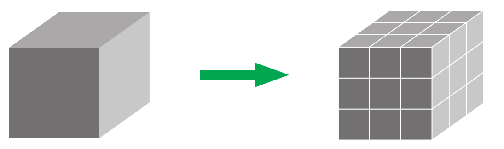Podemos calcular o volume deste cubo conhecendo as suas medidas de comprimento, largura e altura. Sabendo que cada cubinho tem uma aresta medindo 1 cm, o volume de cada cubinho é igual a 1 cm³.
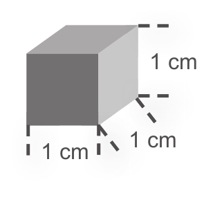Logo, o volume do cubo é igual a V = 3 cm x 3 cm x 3 cm = 27 cm³.
Volume é a quantidade de espaço ocupado por um objeto. No Sistema Métrico Decimal, a unidade fundamental para medir volumes é o metro cúbico (m³).
Observe o sólido geométrico, a seguir:
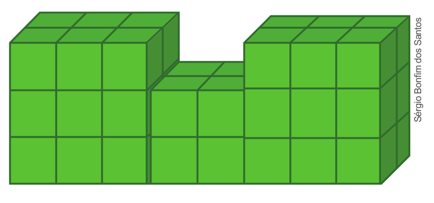1. Considerando cada cubinho uma unidade de medida e que este tem a medida da aresta igual a 1 cm, troque ideias com um colega e calculem o volume deste sólido geométrico.

2. Qual foi a estratégia utilizada por vocês para calcular o volume? Contem ao professor e aos colegas.
Para medir pequenos e grandes volumes usamos os múltiplos e submúltiplos do metro cúbico. Vamos relembrar?
97
UNIDADE 3 - CAPÍTULO 4
No quadro a seguir, temos indicado os múltiplos e submúltiplos em relação ao metro cúbico.
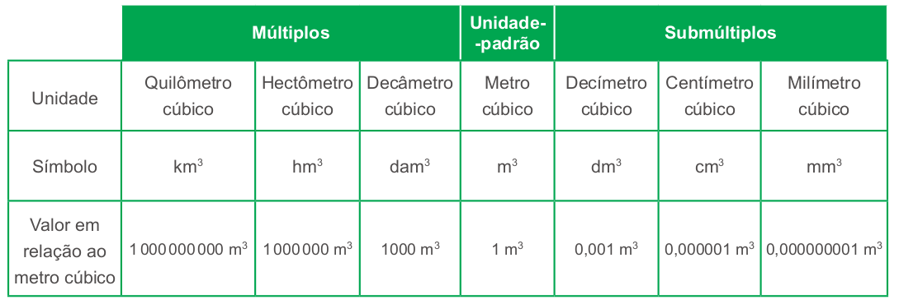Podemos estabelecer transformações entre as unidades de medida de volume fazendo multiplicações ou divisões sucessivas por 1000.
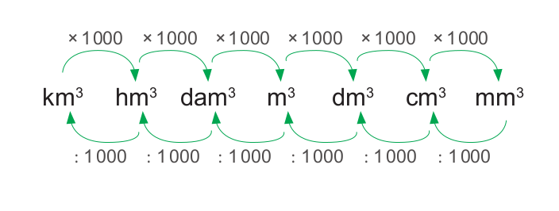ENCONTRE SOLUÇÕES
1. Em seu caderno, calcule o volume dos sólidos geométricos a seguir, considerando que cada cubinho tem o volume igual a 1 cm³.
a)
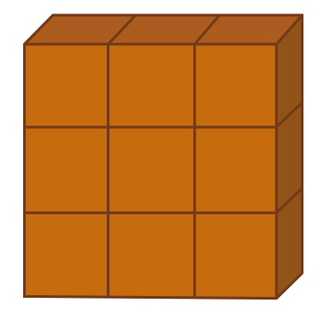b)
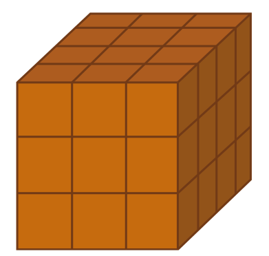c)
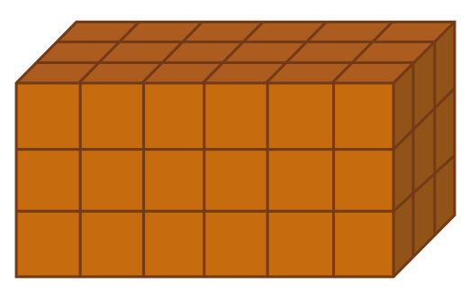98
UNIDADE 3 - CAPÍTULO 4
2. Considerando a medida da aresta de cada cubinho igual a 3 cm, calcule em seu caderno o volume dos sólidos geométricos abaixo:
a)
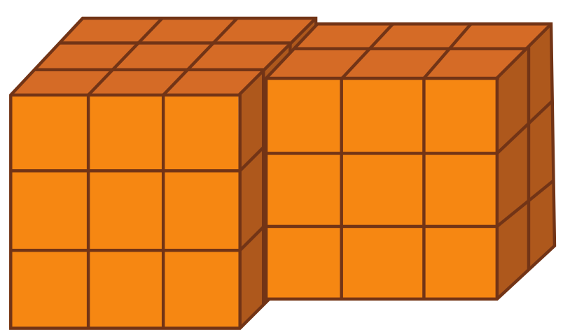b)
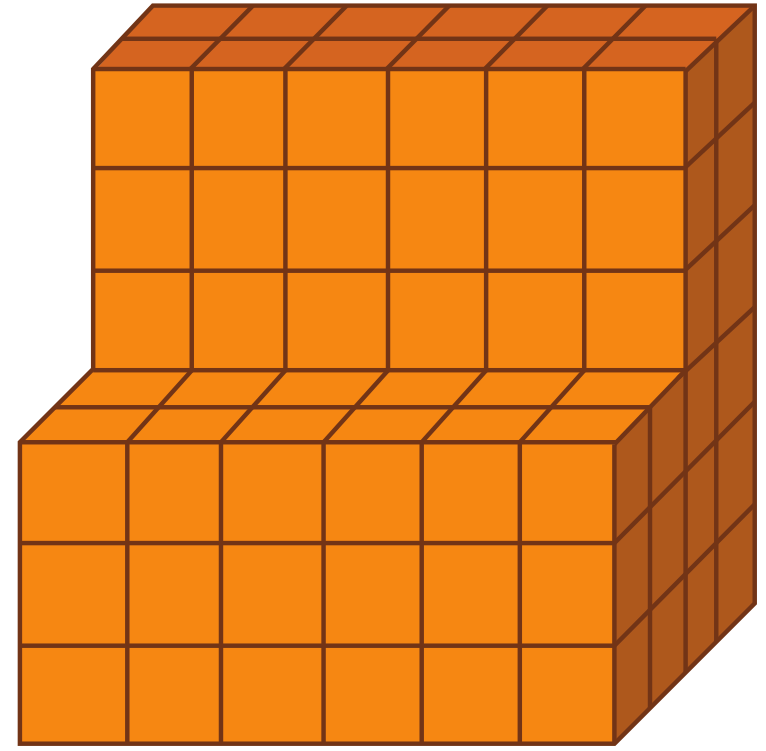3. Em seu caderno, usando papel quadriculado ou uma régua, elabore um problema envolvendo um sólido geométrico. Em seguida, troque o seu caderno com um colega, resolvam os problemas que cada um elaborou e, juntos, verifiquem se a resolução foi feita corretamente.
4. Um bloco retangular de madeira tem 270 cm de comprimento, 40 cm de largura e 90 cm de altura. O bloco foi subdividido em blocos retangulares menores, cada um medindo 90 cm de comprimento, 20 cm de largura e 15 cm de altura. Em quantos blocos retangulares foi subdividido o bloco de madeira inicial?
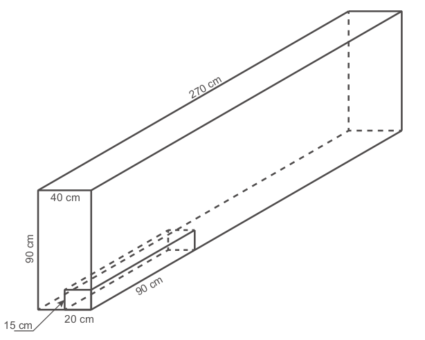5. (ENEM) Alguns objetos, durante a sua fabricação, necessitam passar por um processo de resfriamento. Para que isso ocorra, uma fábrica utiliza um tanque de resfriamento, como mostrado na figura.
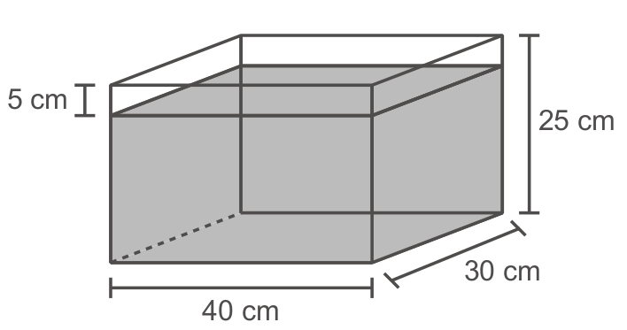O que aconteceria com o nível da água se colocássemos no tanque um objeto cujo volume fosse de 2 400 cm³?
a) O nível subiria 0,2 cm, fazendo a água ficar com 20,2 cm de altura.
b) O nível subiria 1 cm, fazendo a água ficar com 21 cm de altura.
c) O nível subiria 2 cm, fazendo a água ficar com 22 cm de altura.
d) O nível subiria 8 cm, fazendo a água transbordar.
e) O nível subiria 20 cm, fazendo a água transbordar.
99
UNIDADE 3 - CAPÍTULO 4
PROBABILIDADE E ESTATÍSTICA
► Realizando uma pesquisa
Quando queremos conhecer os hábitos e os costumes de uma população podemos realizar uma pesquisa. Os temas a serem pesquisados podem ser os mais variados, como: hábitos alimentares, prática de esportes, saúde, educação, economia, e dentre outros.
A seguir, temos os dados de uma pesquisa realizada sobre a conscientização mundial em relação ao meio ambiente.
100
UNIDADE 3 - CAPÍTULO 4
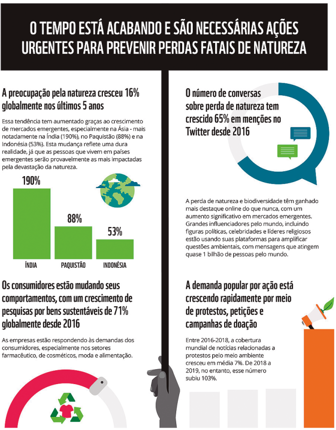101
UNIDADE 3 - CAPÍTULO 4
Para realizar pesquisas e obter informações como essas, precisamos seguir um método estatístico:
► Definir o tema e objetivo da pesquisa;
► Fazer o planejamento;
► Coletar e levantar os dados;
► Apurar os dados;
► Apresentar os dados;
► Analisar e interpretar os dados.
Após definir o tema e objetivo da pesquisa, precisamos definir a população ou o universo estatístico, ou seja, as pessoas que irão participar dela.
Na realização de uma pesquisa nem sempre é possível entrevistar toda a população desejada, desta forma, são selecionadas algumas pessoas que compõem a amostra e que irão participar da entrevista. Neste caso, temos uma pesquisa amostral. Como exemplos, podemos citar as pesquisas eleitorais e de satisfação.
Quando é possível entrevistar toda a população que será envolvida, dizemos que é uma pesquisa censitária. Neste caso, é necessário entrevistar 100% dos participantes. No Brasil, um exemplo de pesquisa censitária é o Censo Demográfico realizado pelo Instituto Brasileiro de Geografia e Estatística (IBGE).
Vamos realizar uma pesquisa amostral ou censitária?
► Troque ideias com sua turma, definam o tema e o objetivo da pesquisa. Vocês podem abordar temas como: meio ambiente, educação e saúde.
► Definam a população ou o universo estatístico e, se a pesquisa será amostral ou censitária.
► Elaborem as perguntas que serão realizadas na entrevista com os participantes.
► Combinem como será feito o registro dos dados coletados.
► Após a coleta dos dados, represente-os por meio de tabelas ou gráficos.
► Construam os gráficos utilizando um software de planilha eletrônica (vejam como construir um gráfico de barras na sequência).
► Produzam um texto a partir das informações coletadas, interpretando os dados obtidos.
102
UNIDADE 3 - CAPÍTULO 4
Como construir um gráfico de barras usando um software de planilha eletrônica
Para orientá-lo nesta construção, vamos utilizar como exemplo o gráfico de barras mostrado nas informações sobre a consciência, o engajamento e a ação global pela natureza.
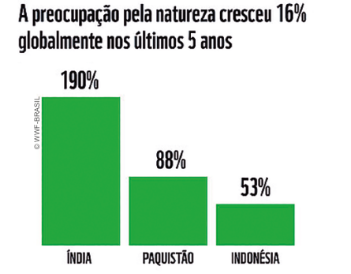Agora, vamos construir o gráfico usando um software de planilha eletrôni- ca para representar as porcentagens indicadas na pesquisa e construir o gráfico de barras.
1.º Acesse o programa BrOffice.org Calc.
2.º Digite na coluna A os nomes dos países que apareceram no gráfico e na coluna B a porcentagem do aumento de pessoas que se preocupam com a devastação da natureza.
Agora, vamos construir o gráfico usando um software de planilha eletrônica para representar as porcentagens indicadas na pesquisa e construir o gráfico de barras.
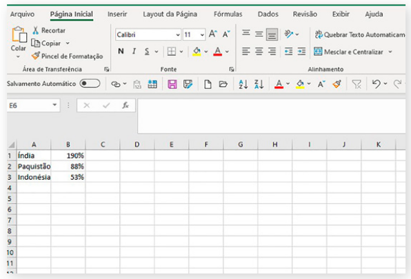3.º Clique com o mouse na célula A1 e arraste até a célula B3 para sele- cionar todas as células que contém as informações que você digitou.
103
UNIDADE 3 - CAPÍTULO 4
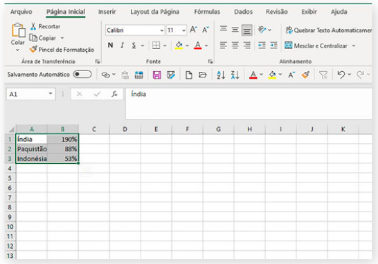4.º Clique no botão “Assistente de gráfico”. Escolha o gráfico com barras verticais e o gráfico se formará.
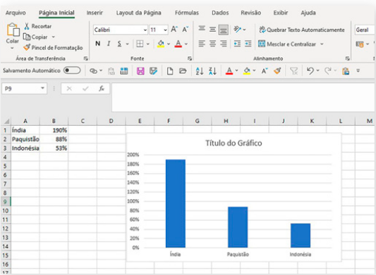5.º Clique sobre o gráfico com o botão direito do mouse para acionar a janela na qual você deverá inserir o título e os dados. Digite o título do gráfico e os dados.
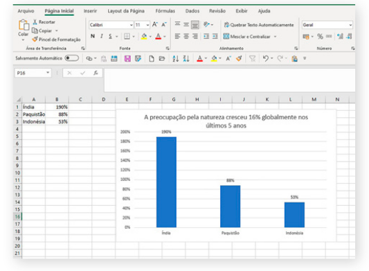6.° Ao clicar fora do gráfico, ele estará pronto.
Agora você já sabe como construir um gráfico usando um software de planilha eletrônica.
104
UNIDADE 3 - CAPÍTULO 4
RELEMBRE
1. (Saresp) Vivian recortou 9 quadrados de cores diferentes para fazer uma face de uma almofada, na forma da figura abaixo. Se cada lado do quadrado mede 6 cm, a área total desta face da almofada é igual a:
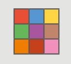a) 144 cm²
b) 216 cm²
c) 274 cm²
d) 324 cm²
2. (CEFET-CE) O piso de uma sala deve ser revestido com peças de cerâmica, cujas dimensões são 30 cm por 20 cm. A sala tem 4 m de comprimento por 3 m de largura. A quantidade de peças necessárias é:
a) 100
b) 150
c) 200
d) 250
e) 300
3. A figura abaixo ilustra uma sala em L, a qual deve ser ladrilhada com peças quadradas de 30 cm de lado. Quantas peças serão necessárias para cobrir todo o chão da sala?
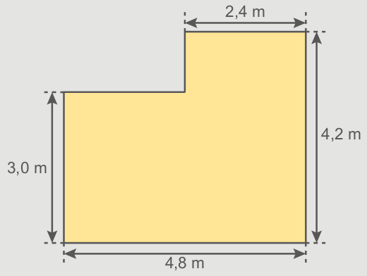4. (UFPE) Na figura a seguir, o quadrado maior foi dividido em dois quadrados e dois retângulos. Se os perímetros dos dois quadrados menores são 20 e 80, qual a área do retângulo sombreado?
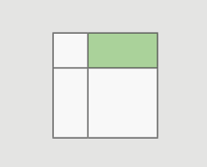80
90
100
120
140
5. Um show em comemoração ao aniversário da cidade será realizado no ginásio de esportes. A área em que o palco será montado e a região destinada ao público estão indicadas na figura.
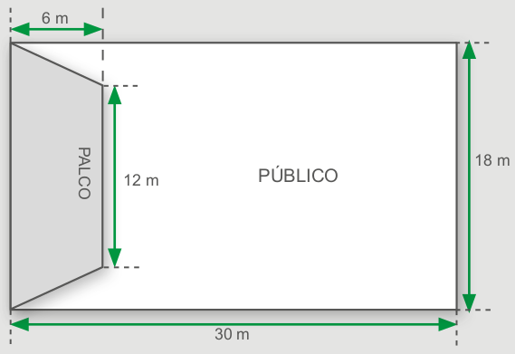Por segurança, a coordenação do show limitou a concentração no local a 4 pessoas para cada m² de área disponível. Quantas pessoas poderão assistir ao espetáculo?
6. (ENEM) Um porta-lápis de madeira foi construído no formato cúbico, seguindo o modelo ilustrado a seguir. O cubo de dentro é vazio. A aresta do cubo maior mede 12 cm e a do cubo menor, que é interno, mede 8 cm. O volume de madeira utilizado na confecção desse objeto foi de:
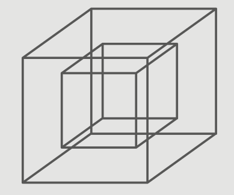a) 12 cm³
b) 64 cm³
c) 96 cm³
d) 1 216 cm³
e) 1 728 cm³
104
UNIDADE 3 - CAPÍTULO 4